＃244 登別温泉の鬼たち
鬼、鬼、鬼、鬼…鬼だらけの温泉街。怖くておちおち風呂も入れません！
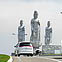＃243 真駒内滝野霊園
デッカイどぉ…でっか過ぎるじゃないかあ！
＃098 北の京芦別
我が国最北限に自生する大観音とハイブリッド観光施設！
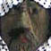＃177 赤倉霊場
カミサマが住む信仰純粋培養地！
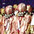＃176 久渡寺
津軽のオシラサマ信仰のメッカ。ホットだぜ！
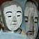＃175 津軽化粧地蔵巡り
津軽の路傍から感じる熱い視線に目をやれば・・・
＃074 昭和大仏
ピンク色のお花畑、よくよく見れば・・・
＃048 さざえ堂；その2まだまだありました。さざえ堂、日本は広い！
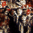＃023 川倉賽の河原地蔵尊津軽最強のスピリチュアルスポット, 涙なくしてみれないよ
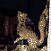＃022 高山稲荷神社東北って・・・ディープ
＃011 恐山
この世の風景とは思えないイタコワールド
一万体の仏像を彫り続けた漢の生き様を見よ！
赤い布に彩られた信仰世界！深い！
堂内で繰り広げられる無言の宴の数々
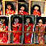＃186 ざしきわらし祈願祭
見えないザシキワラシを視覚化してみました！祭
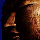＃104 盛岡大仏
句碑は続く〜よ〜 ど〜こまでもぉ〜
＃058 釜石大観音老舗の大観音、奮闘す！
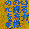＃194 岩城修弘霊場
熱いメッセージに埋め尽くされた珍霊場！
＃193 赤田大仏、折渡千体地蔵
亀田藩時代の名僧☆是山和尚の功績2題を堪能すべし！
あまりにも多種多彩な農村の守護神を見よ！
も〜えろよ も〜えろよ〜 炎よ燃えろ〜
＃059 田沢湖大観音
音と光のハイテク曼茶羅！凄い！
＃021 真山の万体仏ちっちゃいお堂の中に、万の仏が・・・入りきるのか？
山形県
岩に隠れた羅漢さんを全部探すのだあ！
またまたムカサリ絵馬巡り！
謎の大仏と奇妙な奉納物
犬が好きだワン〜猫が好きだニャ〜
＃147 ムカサリ絵馬
静寂の堂内で繰り広げられる無言の結婚式。涙無しには見れないよ。
三陸の漁師に伝わる謎の奉納習俗！
＃146 愛子大仏
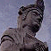＃105 船岡観音
＃060 仙台大観音
＃251 正雲寺
地獄を見てバビロン仏教からのエクソダスを内観せよ！
＃242 左下観音
山中に忽然と現れる謎だらけの木造摩天楼！
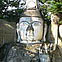＃235 百尺観音
三代にわたって作られる未完の大観音！
魅惑の洞窟巡りと変なお堂
山あいの街道筋に立つ巨大境界神。
＃089 仏の里
山の中に誰にも知られず佇む大観音の廃虚、のはずが・・・
＃081 会津村
大観音の客寄せ企業努力は実ったのか！？
＃047 東堂山昭和羅漢無法羅漢の網走番外地
珍寺大道場 HOME